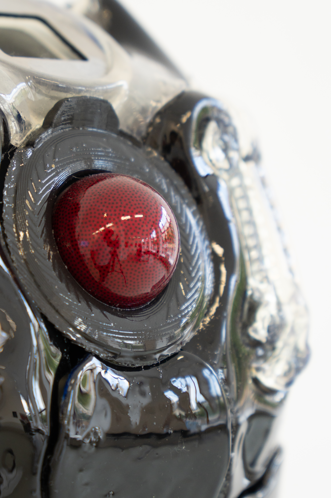
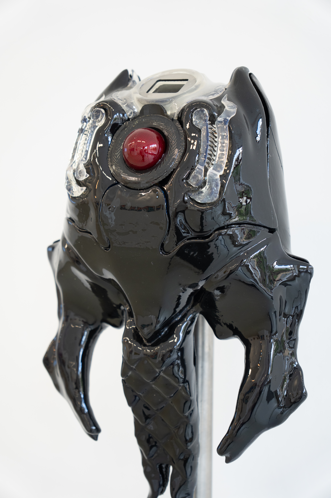
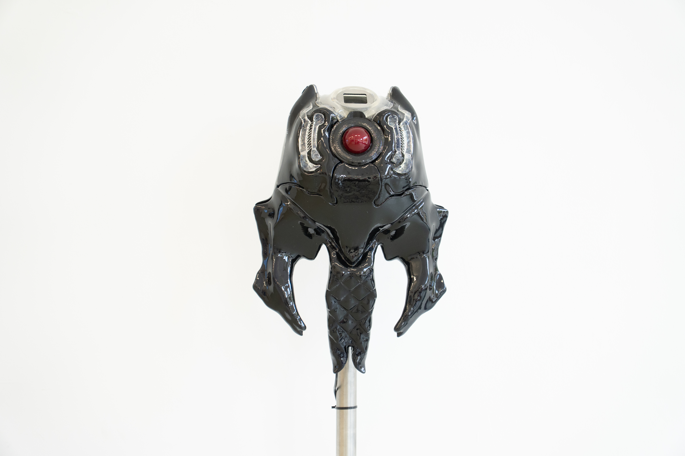
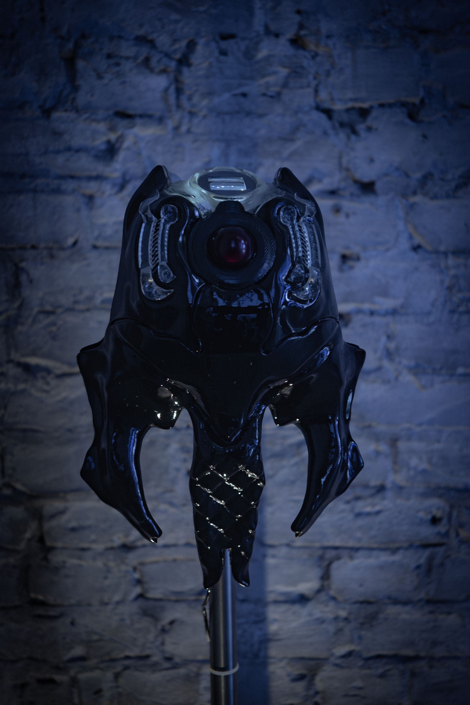

Diver:Unidad-Δ
DIVER is an interface robot conceived as a bio-mechanical wanderer born in the River Chemnitz, designed to establish a situated relationship with its environment.
Developed through a world-building approach, the project uses speculative narratives to explore how future relationships between humans, machines, and natural systems might be shaped. Rather than presenting technology as a tool of control or extraction, DIVER investigates forms of intimacy, permeability, and co-dependence between bodies, both organic and mechanical. The work reflects on how technological systems can be reimagined toward softer, relational, and care-centered forms.
The custom interface incorporates 3D-printed components and a trackball system inspired by aquatic organisms. A Raspberry Pi–based system accesses real-time environmental data from a sensing platform that provides surface and subsurface water information, such as river temperature, using sources including the Stormglass API. This data functions as a form of artificial sensing, comparable to gills or biomechanical fins. Environmental information is translated into dynamic animations displayed on an embedded screen, while the trackball enables visitors to interact with and influence these visualizations. Human input and river data merge in real time, producing a shared and responsive system.

Computational processes in DIVER are not presented as neutral or purely functional. The project proposes a form of techno-scientific mythmaking that imagines soft, non-extractive technologies, deeply connected to poetry, ecology, and care. These technologies are not oriented toward warfare or economic domination, but toward cultivating alternative relationships with the more-than-human world.


DIVER was first presented in June 2024 at the Feed The River Festival in Chemnitz, Germany, an event centered on the dialogue between water, sound, and visual media. The project activated the River Chemnitz through live collaborations with musicians and projections onto the water’s surface, transforming the river into a responsive audiovisual environment. The festival emphasized bodies of water as sentient entities that require attention and care.
The project was later presented in a solo exhibition at SOMA in 2025.
Technic:
Feed The River project : https://www.instagram.com/feed.the.river/?hl=es
The project was later presented in a solo exhibition at SOMA in 2025.
Technic:
- PLA
- Clear Resin
- Stainless Steel
- Raspberry Pi 4
- 240x280 Screen
- Trackball
Feed The River project : https://www.instagram.com/feed.the.river/?hl=es

